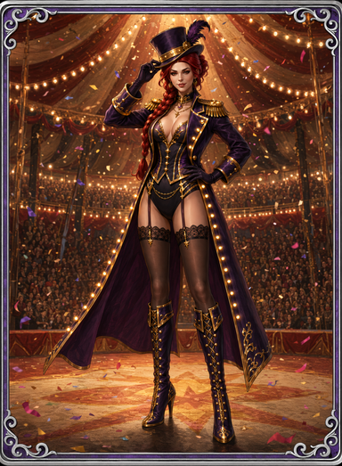
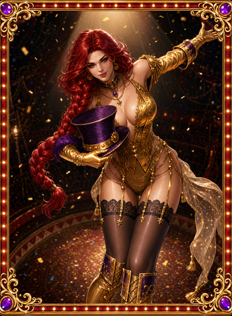
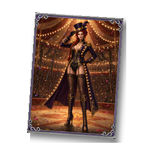
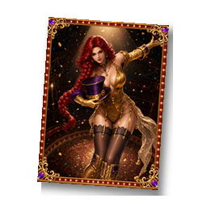
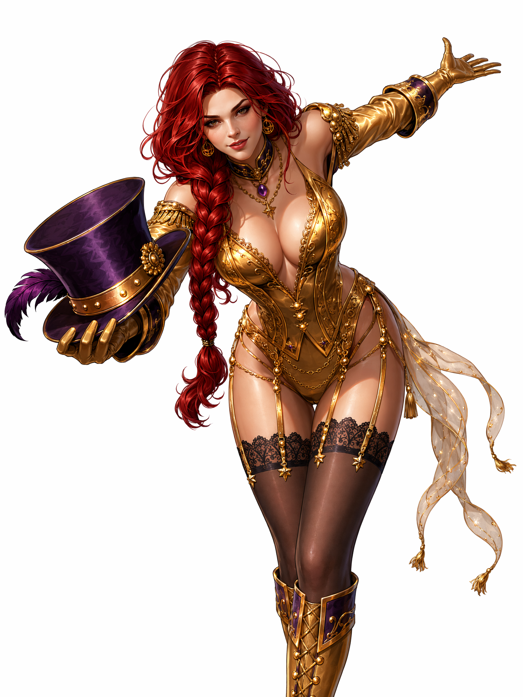
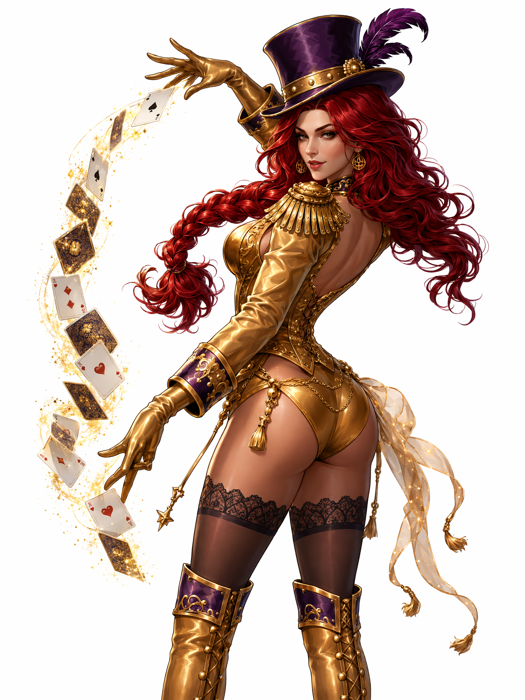
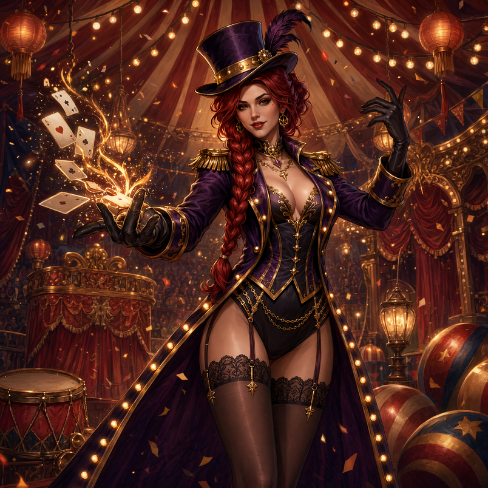
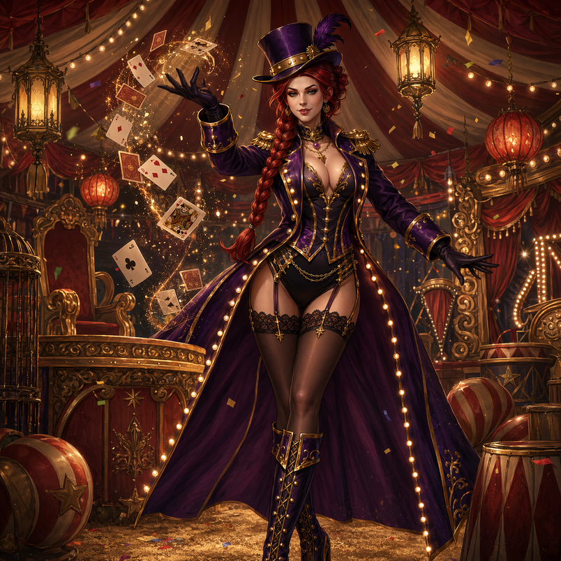

83 原稿
card_image_83_purple_v1.png

83 备选
_alt1

84 原稿
card_image_84_gold_v1.png

84 备选
_alt
边框直接画进卡面 PNG —— 客户端不读 MemorialCard.col6 DK_背景框（全表 84 行皆空），历史 79 绿茵之星 / 80 远航之歌也都是这么做的。


| 品质信号 | 幻紫魅影（基础） | 鎏金魅影（高级） |
|---|---|---|
| 边框 | 银白冷金细框 + 深紫内衬 | 红色内衬 + 厚金 + 灯泡 + 紫宝石角石 |
| 背景 | 帐篷内观众席、暖光热闹 | 暗场中央舞台、单束聚光灯 + 金屑 |
| 构图 | 全身（对齐 80 远航之歌） | 半身偏大（对齐 79 绿茵之星） |
| 满级属性 | +30%（6 级 / 坑深 30 张） | +60%（6 级 / 坑深 62 张） |
红框依据：X3 自身品质色阶 = 绿 < 蓝 < 紫 < 橙红（Item.col14 / Reward.col10 注释），紫→红踩玩家已有直觉，比「银→金」的分层信号强。
不是另画的 —— 由卡面程序化派生：缩到画布 80% 高 + 左倾 4° + 高斯投影，对齐现役 icon_card_image_80 的观感。这样图标和卡面永远一致，卡面改了重跑一遍即可。


卡面成品由这两张裁切缩放而来（按 384:523 比例中心裁，边框不变形）。
在皮肤定稿金版基础上「换姿势 + 更暴露」。poseB 被 GRFal 内容安全网关拦下，平台自动降级 prompt 才出的图，暴露度未达 brief；poseA 是过闸的。最终卡面采用 poseA 的谢幕摘帽姿势。


规格与构图范式对齐深海 / 世界杯两期（两期完全一致＝标准规格）：bg＝中央节日主物件立台座发光 + 场景纵深 + 顶部光束 + 两侧金缎带 + 金屑；icon＝日历本 + 粗绿勾 + 角落节日小物。主物件选本期签到实际发的东西（深海用航海罗盘 → 马戏用马戏勋章）。
804×804 正方形角色场景图，会被 5×5 格逐格揭开，所以四角都要有内容、不能大片留空。原先挂的航海之路 navigation_bg_9 占位已替换。


用户实机验收后追加/返工的三张。

| 资产 | 规格 | 状态 |
|---|---|---|
| 签到 icon / bg | 124×136 透明 / 1028×568 | ✅ 已推 x3-project dev_festival，配置 AO101407 已指向（gdconfig 335ec240，jolt #2211） |
| 纪念卡 83 / 84 卡面 | 384×523 | ✅ 已推 x3-project dev_festival（ff23f683705），Display_Memory + Path_Memory 注册 |
| 纪念卡 83 / 84 道具图标 | 256×256 透明 | ✅ 同上，Display_Item + Path_Item 注册 |
| BINGO 拼图底图 | 804×804 | ✅ 已推 x3-project（3298518211a），配置 ActvPuzzle 1830 已指向（gdconfig 440c4ace，jolt #2214） |